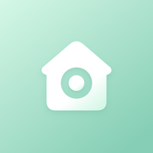
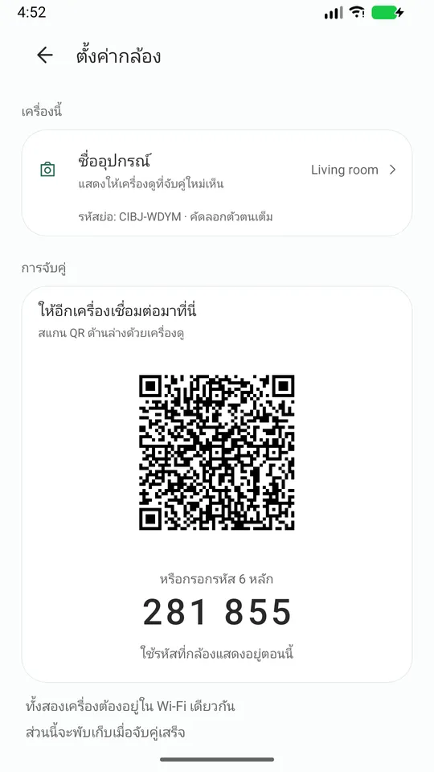
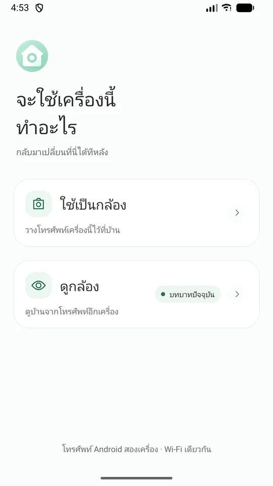
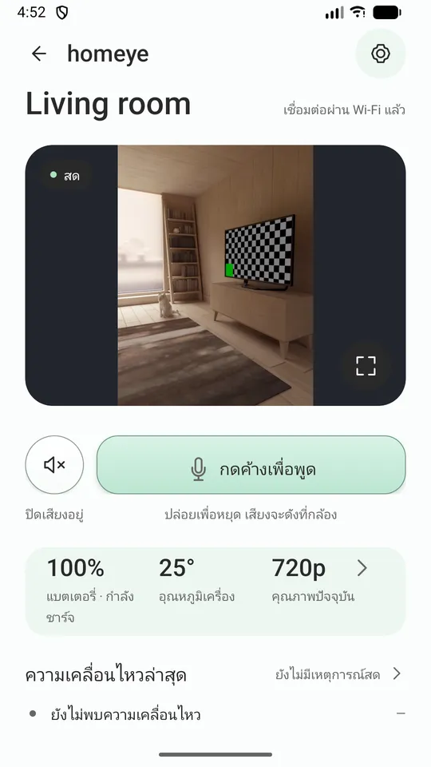
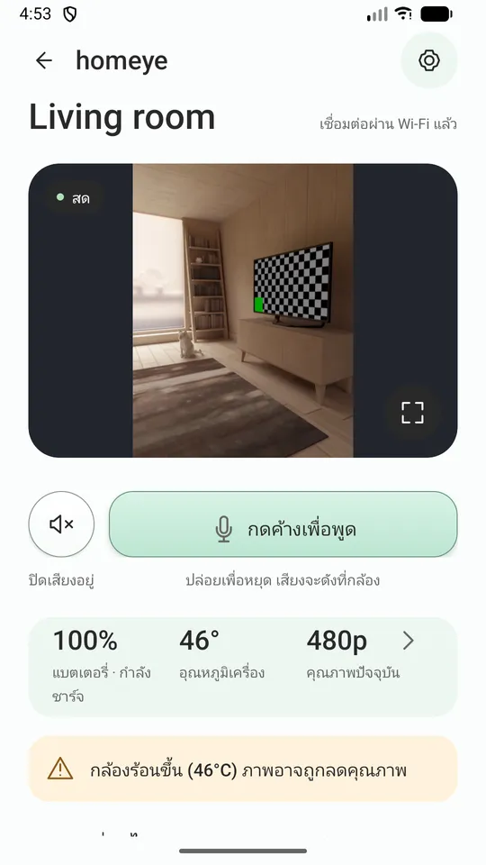
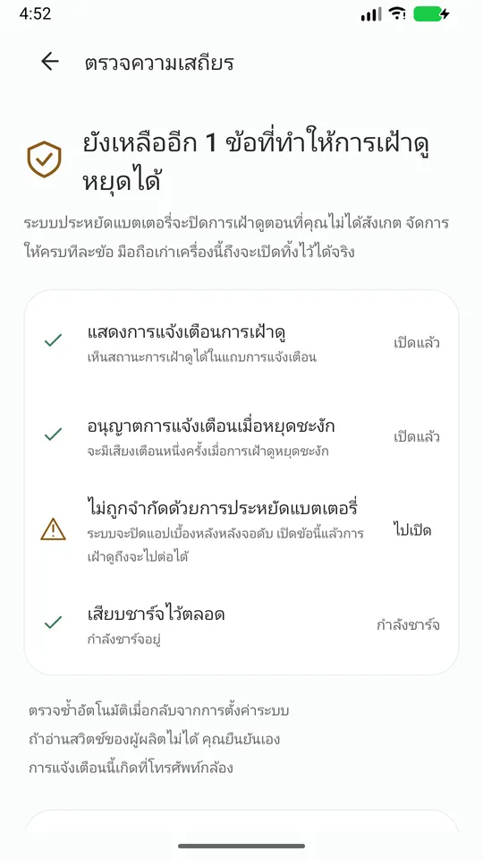
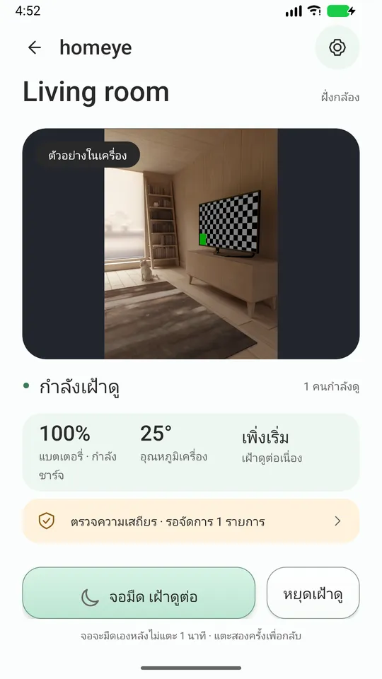

มือถือ Android เครื่องเก่าในลิ้นชัก คือกล้องดูบ้าน
สองเครื่อง หนึ่ง Wi-Fi ดูภาพสด พูดคุยสองทาง และแจ้งเตือนเมื่อมีความเคลื่อนไหว ไม่ต้องสมัครบัญชี ไม่มีคลาวด์อยู่ตรงกลาง ไม่มีโฆษณา
มือถือ Android เครื่องเก่าในลิ้นชัก เสียบปลั๊กปุ๊บก็ใช้เป็นกล้องได้เลย ไม่ต้องซื้ออุปกรณ์ ไม่ต้องสมัครบัญชี
มันไม่โกหกคุณ
คุณจะรู้เมื่อมันหลุด
ถ้ามันหลุด คุณจะรู้ ไม่ต้องมานั่งจ้องเองว่าภาพค้างไปตั้งแต่เมื่อไหร่
บอกว่าทำไมคุณภาพลดลง
เวลามันลดความคมชัดเพราะเครื่องร้อนหรือแบตใกล้หมด มันจะบอกเหตุผล ไม่แอบเบลอเฉย ๆ
พาไปตั้งค่าระบบทีละอย่าง
"ตรวจสอบความเสถียร" รวบรวมสวิตช์ของระบบที่แอบปิดแอปเบื้องหลัง แล้วพาคุณไปเปิดทีละอัน
บันทึกไปเฉพาะที่คุณส่ง
ถ้ามีปัญหา ส่งออกบันทึกวินิจฉัยให้ผู้พัฒนาได้ บันทึกนั้นไม่ถูกอัปโหลดไปไหนเองเด็ดขาด
ใช้ยังไง
- ติดตั้ง Homeye ทั้งสองเครื่อง ต่อ Wi-Fi วงเดียวกัน
- เครื่องเก่าเลือก "ใช้เป็นกล้อง" เสียบปลั๊กแล้วหันไปทางที่อยากดู
- เครื่องที่ใช้ประจำเลือก "ใช้เป็นเครื่องดู" แล้วสแกน QR บนจอเครื่องเก่า
จับคู่ครั้งเดียว หลังจากนั้นเปิดแอปก็ดูได้เลย

หน้าจอ





ทำอะไรได้บ้าง
- ภาพและเสียงสด พร้อมความคมชัดสี่ระดับที่ปรับตามอุณหภูมิและแบตเตอรี่
- กดเพื่อพูด
- ตรวจจับความเคลื่อนไหว พร้อมแจ้งเตือนและภาพย่อบนเครื่องดู
- เครื่องที่เป็นกล้องดับหน้าจอแล้วทำงานต่อได้
- แจ้งเตือนแบตใกล้หมดและเครื่องร้อนจากฝั่งกล้อง
- ซูมจากเครื่องดูได้ เท่าที่เลนส์ของเครื่องนั้นรองรับ
- 15 ภาษา ตามการตั้งค่าของระบบ
สิ่งที่เวอร์ชันนี้ยังทำไม่ได้ ขอบอกไว้ก่อน
ใช้ได้เฉพาะใน Wi-Fi วงเดียวกัน ถ้าคุณอยู่ข้างนอกและใช้เน็ตมือถือ เวอร์ชันนี้จะเชื่อมต่อไม่ได้ การดูจากระยะไกลต้องมีเซิร์ฟเวอร์ กำลังพิจารณาอยู่ ยังไม่อยู่ในรุ่นนี้
สัญญาว่า "ไม่มีวันหลุด" ไม่ได้ Android จำกัดการทำงานเบื้องหลังกับทุกแอป ไม่มีใครสัญญาแบบนั้นได้ สิ่งที่เราสัญญาได้คือ ถ้ามันหยุด คุณจะรู้
ไม่ใช่อุปกรณ์การแพทย์ และไม่ใช้แทนการดูแลของผู้ใหญ่
ความเป็นส่วนตัว (ทุกข้อคุณตรวจสอบเองได้)
- ภาพและเสียงวิ่งอยู่แค่ใน Wi-Fi ที่คุณใช้อยู่ ไม่ผ่านเซิร์ฟเวอร์ของเราเลย
- ไม่ต้องมีบัญชี เราไม่เก็บอีเมลหรือเบอร์โทรของคุณ
- ไม่มีโฆษณา และไม่มี SDK วิเคราะห์ข้อมูล
- เราไม่มีเซิร์ฟเวอร์สื่อและไม่มีบริการบันทึกบนคลาวด์
- ตัวตนของอุปกรณ์คือคู่กุญแจที่สร้างใน keystore ของเครื่อง กุญแจส่วนตัวไม่เคยออกจากเครื่อง
- เพื่อให้เครื่องดูหาเจอ เครื่องกล้องจะประกาศชื่อและลายนิ้วมือกุญแจสาธารณะใน Wi-Fi ของคุณ เท่านั้น
ต้องมีอะไรบ้าง
มือถือ Android สองเครื่อง (7.0 ขึ้นไป) อยู่ใน Wi-Fi วงเดียวกัน เครื่องที่เป็นกล้องควรเสียบปลั๊กไว้